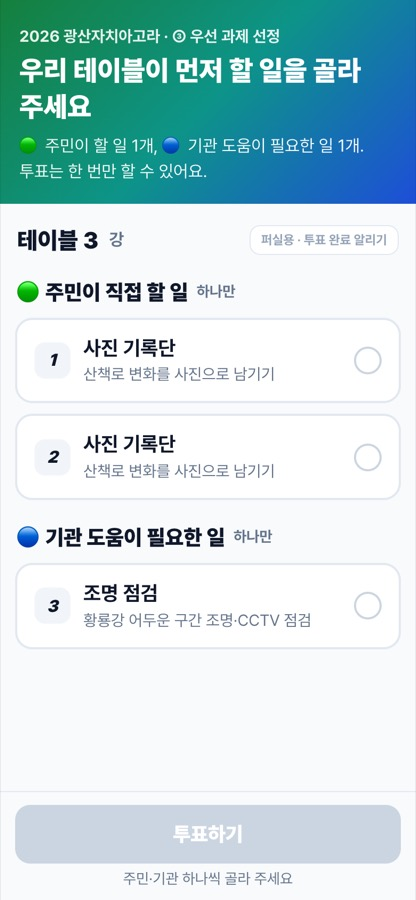
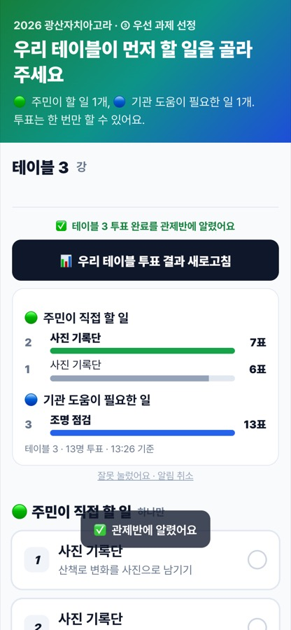
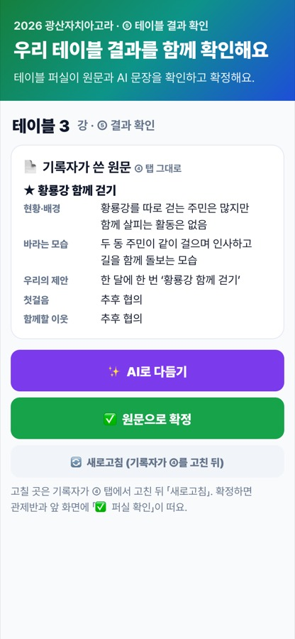
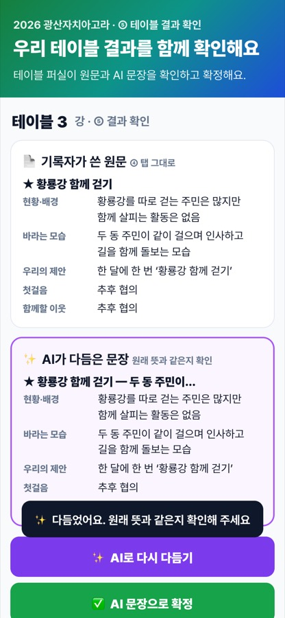
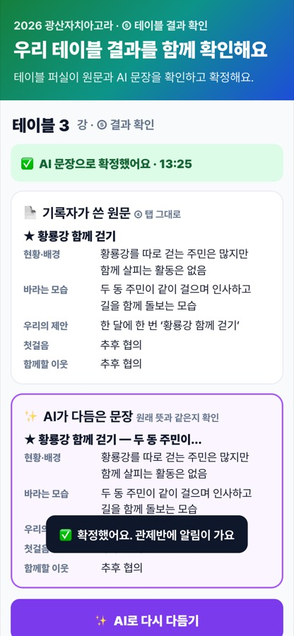

퍼실은 테이블 대화가 잘 흘러가게 돕고, 기록자가 표에 담을 수 있게 요약해 줍니다. 휴대폰으로는 두 가지를 해요. ③ 투표가 끝나면 「투표 완료 알리기」, ⑤에서 우리 테이블 결과를 확인하고 「확정」. 둘 다 테이블 위 QR 카드의 위쪽 칸(③)을 찍은 같은 화면에서 해요.
| 단계 | 질문 | 퍼실이 할 일 |
|---|---|---|
| ① 이용 경험 14:30 · 15분 | 우리는 이곳에서 어떤 경험을 하고 있나요? | 한 사람씩 좋았던 점·불편한 점·개선점. 「어디서·언제 — 무엇이」로 짧게 말하도록 도와요. |
| ② 함께 할 일 14:45 · 15분 | 이곳이 어떻게 달라지면 좋을까요? | 제안마다 무엇을 어떻게 할지 한 문장으로. 🟢 주민이 할 일 / 🔵 기관 도움이 필요한 일을 나눠 물어요. 이 제안들이 ③ 투표 후보가 돼요. |
| ③ 우선 과제 15:00 · 5분 | 무엇을 먼저 이야기해 볼까요? | 참가자는 QR 카드 위쪽 칸으로 투표(🟢 1개 · 🔵 1개, 한 사람 한 번). 모두 끝나면 휴대폰으로 「투표 완료 알리기」 → 결과 보기(2쪽). 1위를 테이블에 알려 주세요. 동점이면 함께 정해요. |
| ④ 실행방법 15:05 · 20분 | 무엇부터 시작하면 좋을까요? | 선정 과제마다 현황·바라는 모습·제안·첫걸음(언제·어디서·동별 역할)·함께할 이웃. 못 정한 것은 ‘추후 협의’. 다 채우면 기록자가 ④ 탭 맨 아래에 ‘제출’. |
| ⑤ 결과 확인 15:25 · 5분 | 우리가 이야기한 뜻과 맞나요? | 휴대폰 「퍼실용 · 결과 확인」(2쪽): 원문 읽어 주기 → 필요하면 ✨ AI로 다듬기 → 뜻이 같은지 확인 → 확정. 고칠 곳은 기록자가 ④에서 고친 뒤 「새로고침」. |
| ⑥⑦ 공유·공감 15:30~ | — | ⑥ 앞 화면에 우리 결과가 틀리게 나오면 손을 들어 관제반에. ⑦ QR 카드 아래 칸으로 공감(♥). 휴대폰이 어려운 분을 도와 주세요. |





고칠 곳이 나오면 기록자가 ④ 탭 그 칸에서 고치고 → 휴대폰 「🔄 새로고침」 → (필요하면 다시 다듬기) → 확정. 확정을 바꾸려면 「확정 취소」 뒤 다시 확정해요.
| 이럴 때 | 이렇게 |
|---|---|
| 휴대폰 화면이 단계에 맞게 안 바뀌어요 | 화면을 아래로 당겨 새로고침. 그래도 안 되면 QR 카드 위쪽 칸을 다시 찍기 |
| 「퍼실용」 버튼이 안 보여요 | ③은 투표가 열려 있을 때, ⑤ 결과 확인은 관제가 ④·⑤로 넘긴 뒤에 보여요 |
| AI 다듬기가 실패했어요 | 잠시 뒤 다시 누르거나, 바로 원문으로 확정해도 돼요 |
| 「④에 정리된 내용이 없어요」 | 기록자가 ④ 탭 다섯 칸을 채웠는지 확인 → 「새로고침」 |
| 앞 화면에 우리 결과가 틀리게 나와요 | 기록자가 ④에서 고치기. 급하면 손을 들어 관제반에 |